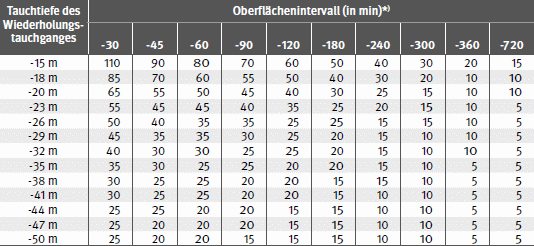

| Tabelle 6: | Zeitzuschlag für das Austauchen nach Wiederholungstauchgängen (Siehe Abschnitt 9 der Erläuterungen) |

*) Oberflächenintervall ist die Zeit zwischen Beendigung der Dekompression des ersten Tauchganges und Beginn des Wiederholungstauchganges (angegeben in min)